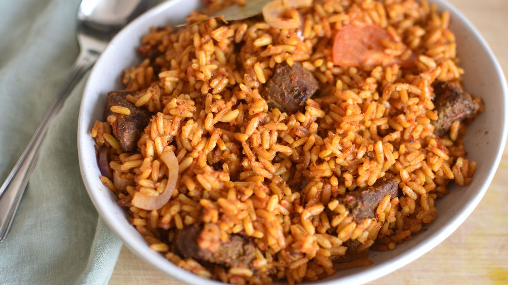

Jollof Rice

Nigerian Jollof Rice Recipe
Nigerian Jollof Rice is an iconic dish. It's one of those dishes that you have to have before you die. It's a classic and is honestly
one of my favorite rice dishes of all time. Trust me... that's a big deal! Also ps... Nigerian Jollof >>> Ghanian Jollof.
Ingredients
- 3/4 cups of oil
- 1 medium onion (sliced)
- 5 tablespoons of tomato paste
- 4 cloves of garlic
- 1 tablespoon of ginger (grated)
- 2 bay leaves
- Blended pepper sauce:
- 3 red bell peppers
- 3 tomatoes plum
- 2 scotch bonnet
- 1 onion diced
- 1 tablespoon of thyme
- 1 tablespoon of curry powder
- Salt (to taste)
- Black/White pepper (to taste)
- 1 tablespoon of chicken buillon powder (3 cubes)
- 6 cups of rice (long grain)
- 4 cups of chicken stock
- 1 large tomato (sliced)
- 2 tablespoons of butter (room temp)
Steps
- Heat oil in large pan till hot
- Add diced onions and cook for 3-5 minutes or till onions are soft
- Add tomato paste and fry for 5 minutes
- Then ad garlic, ginger, and bay leaves. Cook for 2ish minutes
- Add blended pepper. Cook until water is gone (around 15 minutes)
- Season with thyme, curry powder, salt, white pepper, and chicken powder cubes (2-5 minutes)
- Stir rice into sauce until it's well coated
- Add chicken stock then close lid and turn to high for it to boil
- Let it boil for 3 to 5 minutes then switch to mediuem right away
- Steam rice until it's done (takes about 30 minutes)
- Add butter, sliced tomato, and onions. Stir a little then cut off heat. Cover it to keep steam
- Enjoy!